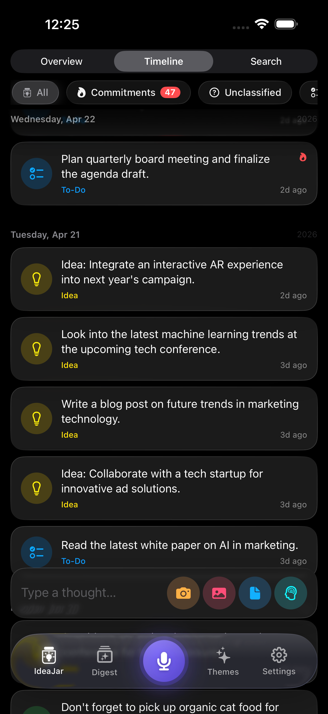
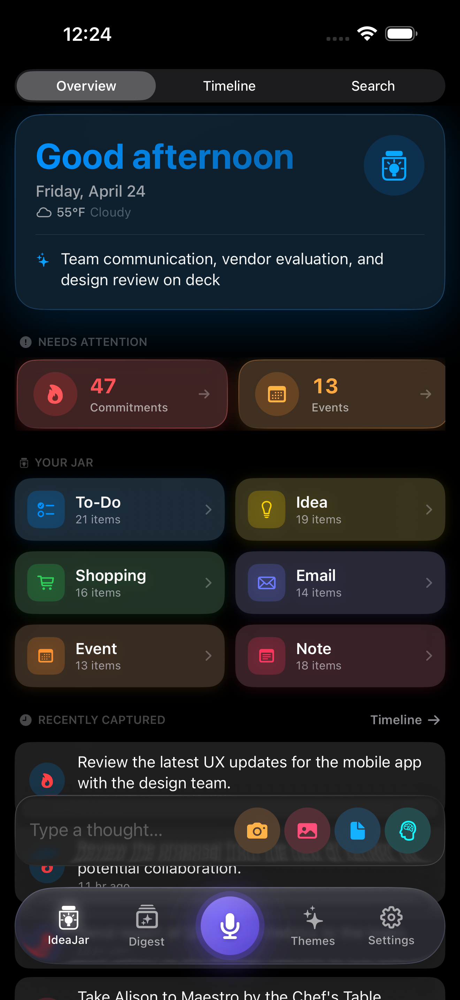
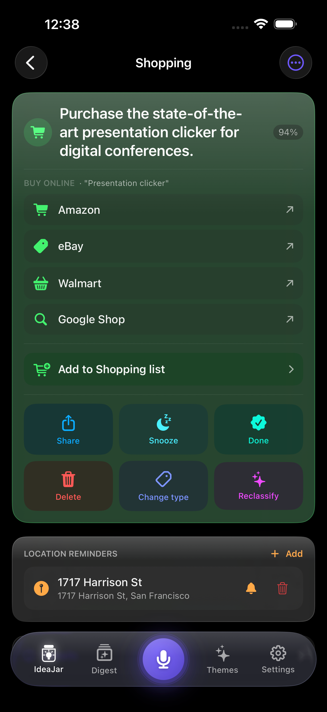
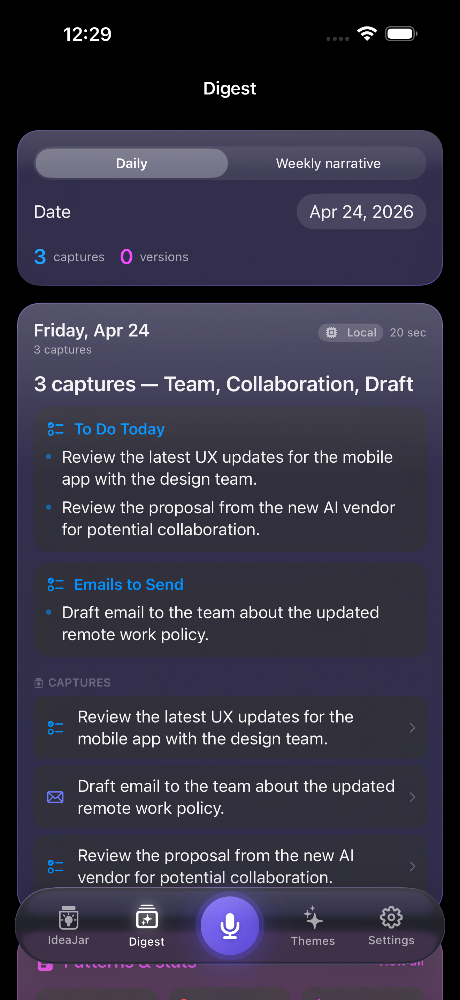
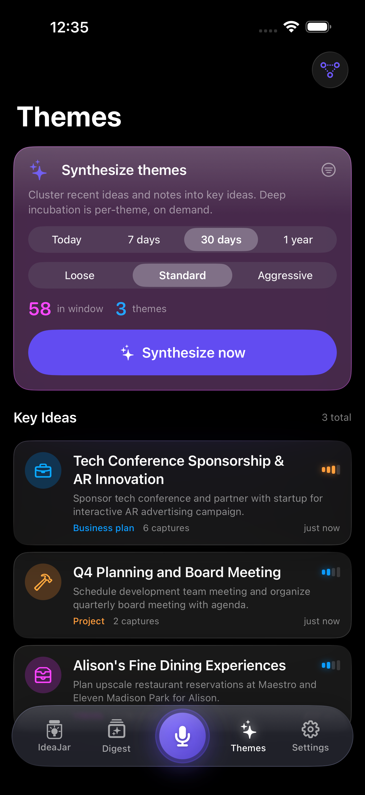
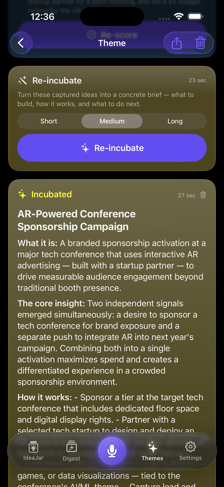
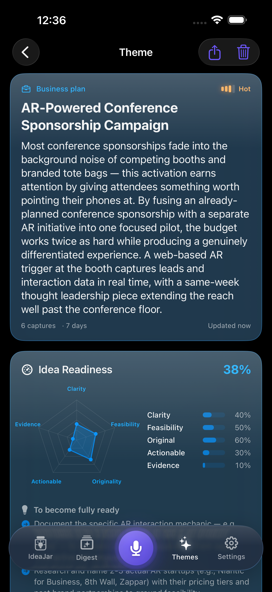
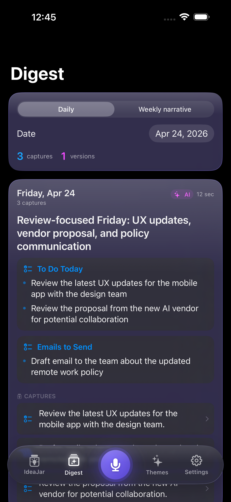
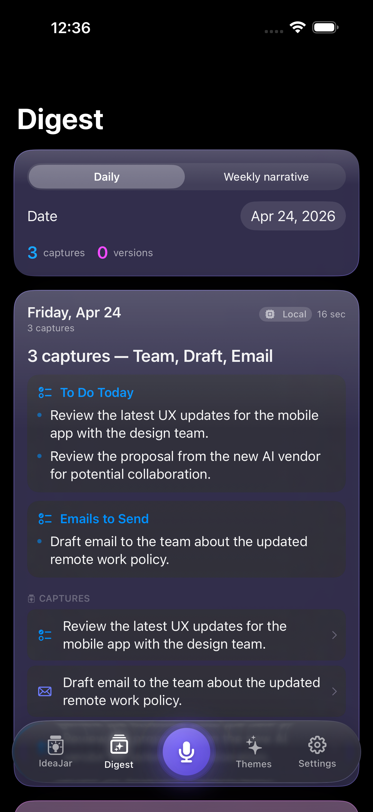

1) Capture in any format
Voice notes, quick text, photos, and shared links/files all land in one unified timeline with timestamps and location context.
My IdeaJar is an AI-first thought companion for people who think quickly and capture messily. Speak, type, snap, or share from other apps — then let My IdeaJar classify, summarize, cluster themes, and suggest your next move.
No folders to manage. No tagging required. Built for rapid capture.

My IdeaJar is designed around one job: convert messy daily input into decisions you can act on.

Voice notes, quick text, photos, and shared links/files all land in one unified timeline with timestamps and location context.

My IdeaJar classifies each capture (Idea, To-Do, Event, Email, Shopping, Note), adds summaries, and creates suggested next actions.

Daily digests and semantic theme clustering connect related thoughts across days so you can notice opportunities sooner.
These are practical capabilities designed to reduce friction between idea capture and execution.

Related captures are grouped by semantic similarity and grown into evolving themes. Choose a window — today, 7 days, 30 days, or a year — and let My IdeaJar synthesize the key ideas hiding in your jar.
Turn a theme into a short, medium, or long synthesis. My IdeaJar pulls the underlying captures into a structured brief — what it is, the core insight, and how to make it real — so an early idea can become an actionable plan.


Every theme gets an Idea Readiness score across clarity, feasibility, originality, actionability, and evidence — so you can see at a glance which ideas are ready to act on and which still need more thought.
Voice transcription and local classification paths let core flows continue even when you are offline or on unstable networks.
Convert captures into reminders, calendar entries, map routes, phone/message actions, clipboard content, and research prompts.
Generate concise daily and weekly overviews to review what mattered, what is emerging, and what you should act on next.
Geofence triggers can surface contextually relevant captures when you reach places linked to specific tasks or ideas.
Support for Claude and OpenAI with configurable model priorities per task type and graceful fallback behavior.
Raw audio never leaves your device. Captures live in your private iCloud account — see the privacy policy for full details.
Every screen in My IdeaJar is built to shorten the path from a half-formed idea to something you can use.

A morning glance at what to handle today — to-dos, emails to send, and the captures behind them.

Switch between a daily checklist and a weekly narrative that reads back the story your captures tell.
Shop the item, snooze it, share it, reclassify it, or attach a location reminder — all from the capture itself.
If your best ideas happen between meetings, commutes, workouts, or deep work sessions, My IdeaJar is built for that reality.
Capture product, hiring, customer, and strategy notes in real time — then review actionable digests before planning sessions.
Collect photo references, verbal feedback, and rough thoughts into clustered themes to guide roadmap and UX iteration.
Continuously collect fragments and sources from across apps, then use thematic synthesis to shape briefs and long-form writing.
Keep moving while capturing commitments and ideas, with reminders, drafts, and map-aware prompts generated automatically.
No. You can capture through voice, text, photos, file attachments, and the iOS Share Extension from other apps.
Key flows include local fallback paths (like on-device transcription/classification) plus offline queue behavior for deferred cloud tasks.
It can suggest reminders, calendar events, email drafts, map actions, links/calls/messages, clipboard actions, and research prompts.
Raw audio never leaves your device, captures sync through your private iCloud account, and we don't sell or advertise against your data. Read the full privacy policy for specifics.
Yes currently. My IdeaJar is built for iPhone on iOS 17 and above.
Start with a single capture and let My IdeaJar organize the rest.